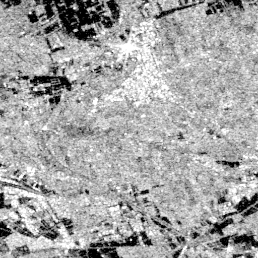

SEE THE CHANGE.
QUESTION THE SIGNAL.
TRUST THE EVIDENCE.
SPECTRA-SAR — From Satellite Signals to Defensible Decisions.
Challenge: Dancing with the SARs
RADAR CAN REVEAL CHANGE.
BUT WHAT DESERVES REVIEW?
Signals
Radar differences can originate from surface changes, observation geometry or noise.
Uncertainty
Detection algorithms can miss real reference cases or highlight false candidates.
Accountability
Reviewers need locations, supporting data and a traceable path back to sources.
FROM RADAR PIXELS TO
REVIEWABLE EVIDENCE.
BUILT AROUND TRACEABLE DATA.
Geocoded radar observations
- Cropped GCOV acquisitions: 17 and 29 October 2026.
- Source identity and SHA-256 integrity are documented.
- Mixed product-processing versions; compatibility is not independently certified.
Separate research benchmark
- Before/after radar observations and held-out reference labels.
- Baseline and experimental spatial ML evaluation.
- Precision–recall trade-offs shown, not hidden.
INSPECT. COMPARE.
CHALLENGE THE RESULT.


NOT JUST MORE DETECTIONS.
MORE ACCOUNTABLE REVIEW.
- Show two acquisitions.
- Display changed pixels.
- Leave interpretation and verification outside the tool.
- Check source provenance and metadata.
- Compare detection methods and limitations.
- Organize candidate patches for review.
- Export geospatial and integrity evidence.
TOWARD AN EARTH INTELLIGENCE PLATFORM.
Multi-satellite fusion
Combine complementary observations and timelines with explicit compatibility checks.
Validated deformation
Research SAR offset and motion products with proper calibration and ground truth.
Evidence-grounded AI
Build human-reviewable, source-linked explanatory assistance.
Exposure intelligence
Use aligned population and infrastructure datasets with uncertainty reporting.
Time-series monitoring
Investigate persistent and transient change using more than two observations.
Trustworthy sharing
Strengthen evidence portability, reproducibility and review records.
SPECTRA-SAR — See the Change. Question the Signal. Trust the Evidence.